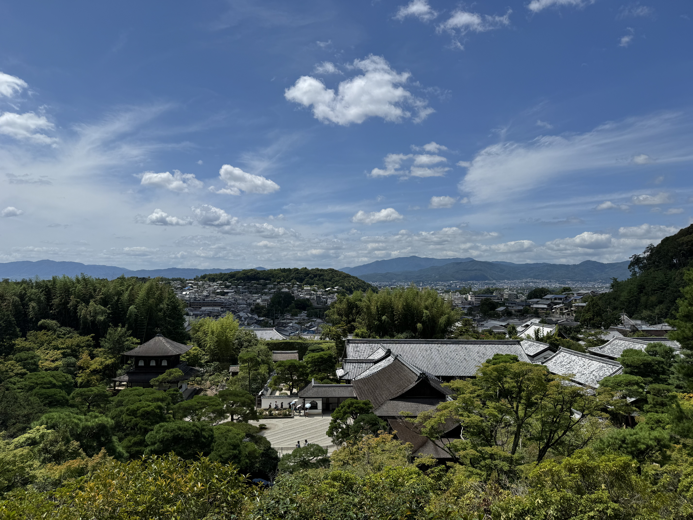
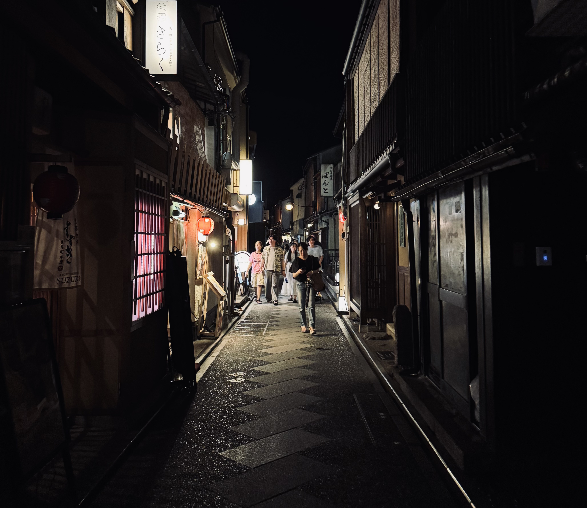
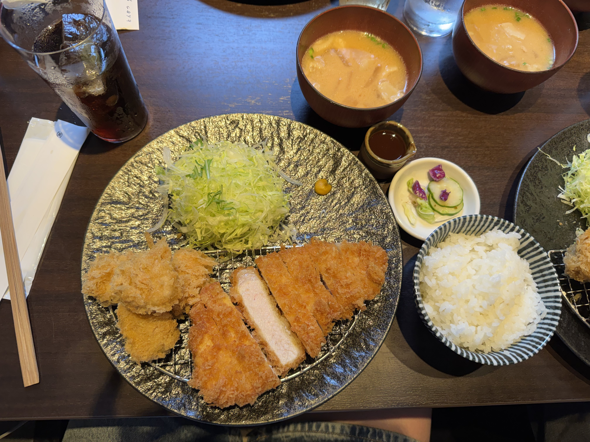
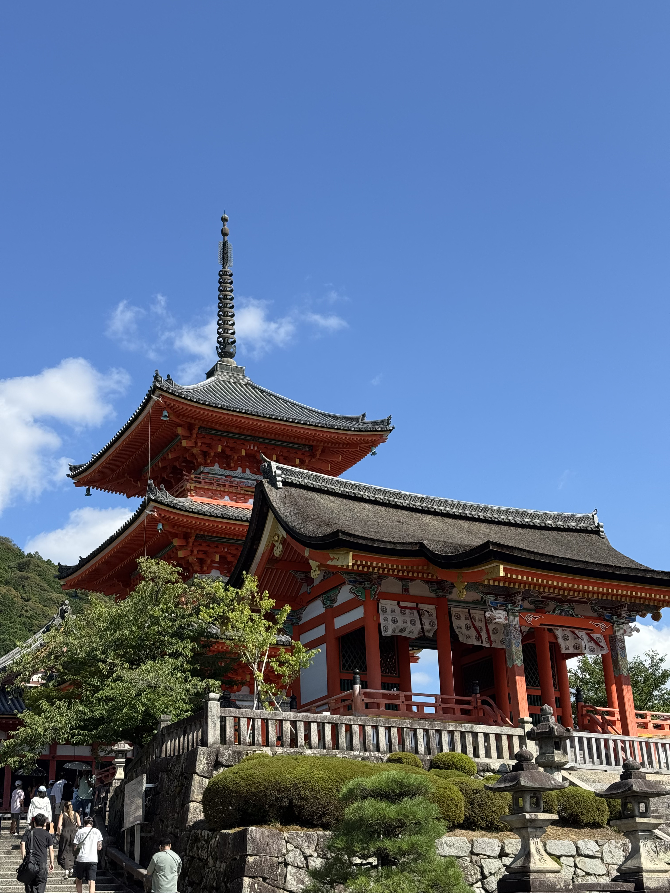
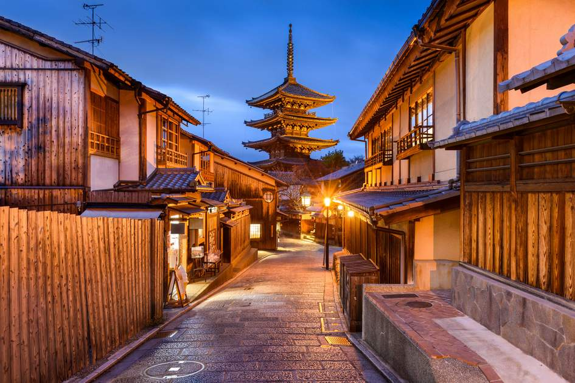
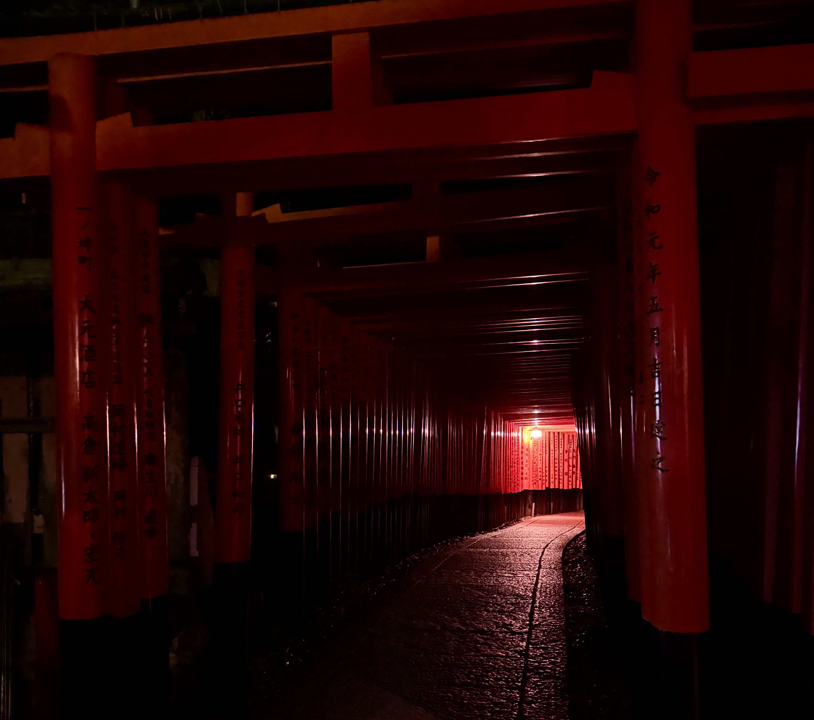

Киото
Киото - древняя столица Японии со множеством старых храмов и садов. Здесь сохранились старые улицы с рёканами, тихими магазинчиками и забегаловками
Навигация по странице
Раздел 1. Достопримечательности Киото
Киото - это культурное и историческое сердце Японии. В отличие от современного Токио с его небоскребами, Киото практически не пострадал во время Второй мировой войны. Благодаря этому здесь бережно сохранены тысячи аутентичных деревянных домов, храмов и садов.
Основные достопримечательности
- Храм Киёмидзу-дэра
- Святилище Фусими Инари
- Кинкаку-дзи
- Замок Нидзё
- Бамбуковая роща Арасияма
Известные районы Токио
- Гион
- Хигасияма
- Арасияма
- Сидзё
Что можно увидеть в разных районах
-
Гион
- Улица Ханамикодзи
- Святилище Ясака
- Гион Корнер
-
Хигасияма
- Улицы Нинэндзака и Саннэндзакэ
- Пагода Ясака
- Аллея Исибэ
-
Арасияма
- Бамбуковая роща Сагано
- Мост Тогэцукё
- Храм Тэнтрю-дзи

Фотография ночной улицы Киото
Нажмите на миниатюру, чтобы открыть изображение в большом размере 600×400 пикселей.

Миниатюра является графической гиперссылкой на изображение большого размера.
К началуРаздел 2. Еда в Киото
В Киото еда мало чем отличается от Токийской. Здесь тоже можно попробовать и традиционные, и современные японские блюда.
Популярные блюда
- Суши
- Рамен в ресторане ICHIRAN
- Вагю
- Свинина в кляре
- Воздушные десерты

Популярные места в Киото
В таблице представлены некоторые популярные места Киото.
| Место | Описание | Изображение | Подробнее |
|---|---|---|---|
| Киёмидзу-дэра | Знаменитый буддийский храмовый комплекс, основанный в VIII веке и включенный в список Всемирного наследия ЮНЕСКО |
 |
Ссылка на google maps |
| Пагода Ясака | Это знаменитая 46-метровая пятиэтажная деревянная пагода. Она является одной из самых узнаваемых и фотографируемых достопримечательностей города, символизируя классический образ старой Японии |
 |
Ссылка на google maps |
| Святилище Фусими Инари | Это один из самых важных синтоистских храмовых комплексов. Огромный комплекс занимает территорию священной горы Инари и знаменит своими тысячами ярко-оранжевых ворот тории |
 |
Ссылка на google maps |
К началу